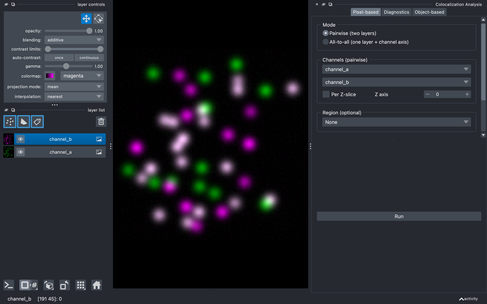

Usage guide¶
This page walks through every control in the Colocalization Analysis dock widget, top to bottom.
Documentation index: Home · Usage · Metrics · Python API
Opening the widget¶
In napari: Plugins → Colocalization Analysis. The widget docks on the
right by default. To follow along without your own data, load a sample:
File → Open Sample → napari-colocalization → Colocalization sample (2D).
A 3D synthetic version is also provided, plus CBS006RBM — a
two-channel benchmark image (~50 % colocalization) downloaded once and
cached under ~/.cache/napari-colocalization/ from the
Colocalization Benchmark Source.

The widget has two halves separated by a draggable divider:
- Configuration (top) — what to analyse and how.
- Results (bottom) — Run button, table, density plot, CSV export, and figure export. Hidden until the first run.
Each half has its own scrollbar; if a section overflows you can drag the divider or resize the dock to redistribute space.
Mode¶
Choose how channels are supplied:
- Pairwise (default) — pick two separate image layers (e.g.
channel_aandchannel_b). - All-to-all — pick a single image layer that has a channel axis (e.g.
shape
(C, Y, X)or(Z, Y, X, C)); the plugin computes every channel pair(i, j)withi < j.
The form below this section changes to match.
Channels¶
Pairwise¶
Two layer combos labelled Image A and Image B. They are auto-populated from image layers in the viewer. When at least two image layers are present, A and B default to different layers so the pairwise analysis is meaningful out of the box.
Both layers must have the same shape; otherwise the run is aborted with a notification.
All-to-all¶
A single Image stack combo plus a Channel axis spinbox. The spinbox
is bounded by the selected layer's .ndim. When you pick a layer, the
plugin guesses a sensible default channel axis (the smallest axis if it has
≤ 8 entries, otherwise axis 0); always double-check it matches your data.
Channel names in the results are derived from the layer name plus the index
along the channel axis (e.g. stack_0, stack_1, stack_2).
Region (optional)¶
A single dropdown listing every Shapes and Labels layer in the viewer, with None at the top:
- None (default) — analyse the whole image. The results table will
have one row per channel pair, with
region = 0. - A Shapes layer — each shape becomes its own region. The region IDs in the table match the shape indices napari shows when you hover (0-based).
- A Labels layer — each non-zero label becomes its own region; the label values themselves are preserved in the table.
The dropdown updates automatically when you add, remove or rename a Shapes/Labels layer. Image layers are excluded from the list. The plugin infers the region kind from the selected layer's class — there is no separate "kind" selector.
The region's spatial dimensions must match the channels' spatial dimensions (in all-to-all mode this is the layer shape with the channel axis removed).
Correlation metrics¶
Four checkboxes for Pearson, Spearman, Li ICQ and Manders. By default only Spearman is enabled — it is the most outlier-robust of the four, and a common starting point.
You can pick any subset; missing metrics are reported as NaN in the
table.
Manders threshold¶
Visible only when Manders is checked. Choose how the M1/M2 thresholds are determined:
- Costes (auto) (default) — iterative regression-based threshold. Pixels above both thresholds are treated as the colocalising population. See metrics.md#manders.
- Manual — supply explicit
T_aandT_bvalues. Use this if you already know the appropriate background level for each channel, or if Costes returns implausible thresholds (which can happen on highly non-linear or noisy data).
In all-to-all mode, manual thresholds are applied identically to every channel pair — there is no per-pair manual override in v1.
Run¶
Triggers the analysis on a background thread so the napari UI stays responsive. While running, the Run button is disabled. On completion, the Results group becomes visible and napari shows a notification with the row count.
Errors (e.g. shape mismatch, missing layer, mask shape mismatch) surface as a notification and the table is left untouched.
Results¶
Table¶
One row per (channel pair, region) combination. Columns:
| Column | Meaning |
|---|---|
region |
Region ID (0 = whole image; otherwise the shape index or label value). |
channel_a, channel_b |
Channel names. |
n_pixels |
Number of pixels analysed in this region. |
pcc, pcc_pvalue |
Pearson correlation + two-tailed p-value. |
srcc, srcc_pvalue |
Spearman rank correlation + p-value. |
icq |
Li's Intensity Correlation Quotient (−0.5 to +0.5). |
m1, m2 |
Manders' M1 and M2 coefficients. |
threshold_a, threshold_b |
Thresholds used for MCC (whether manual or Costes-derived). |
Click any column header to sort. The table sorts ascending on region by
default. Multi-row selection works with Ctrl-click / Shift-click.
Density plot¶
A 2D hexbin density plot of channel-A vs channel-B intensity for the most recently selected row. Hex cell colour is on a log scale (so a few dense background cells don't wash out signal cells), and empty cells are transparent against the black background. Vertical / horizontal red lines mark the Manders thresholds when those metrics were computed. The metric values for the selected row are written in the upper-left corner.
Hexbin aggregates pixels into a fixed grid, so render cost is bounded regardless of region size — every pixel in the region contributes, nothing is subsampled.
Region highlighting¶
When you select rows in the table:
- Shapes source — every selected row's shape gets the dashed-outline highlight in the viewer.
- Labels source — selecting a single row turns on
show_selected_labelfor that label; selecting multiple rows drops the focus filter so all labels remain visible (napari only emphasises one label at a time). - None source — no viewer highlighting.
Ctrl-clicking the only selected row deselects it; the density plot clears and the viewer highlight is removed.
Export CSV…¶
Saves the current table as CSV via a file dialog. Column order matches the table. Missing values are written as empty cells.
Export figure…¶
Saves the current density plot as an image. A small dialog asks for width and height in inches and DPI before opening a file dialog; the file extension chooses the format (PNG, PDF, SVG, or TIFF). The black axes background is preserved. The on-screen canvas is not resized — only the saved file uses the chosen dimensions.
Layout tips¶
- The divider between Configuration and Results is draggable — pull it down if your config has many active options.
- The divider between the table and the density plot is also draggable. The default 60/40 split favours the table.
- Both halves of the widget have scrollbars when their content overflows; the widget stays usable even in narrow docks.